Technology to responsibility layer mapping
TECH-D03 — Responsibility mapping, not a time sequence. Dashed relationships carry control or identify responsibilities. Thick arrows carry file bytes directly between Workspace, Artifact Gateway and one configured Vault, bypassing the Server. Server-owned Artifact Custody selects the location, issues scoped grants and revalidates receipts; a receipt cannot publish a Generation. Security and persistence are separate Module responsibilities, not sequential transport hops. The Vault and Adapter seam supports later multi-vault work without deploying it in PH1.
